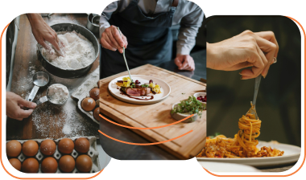
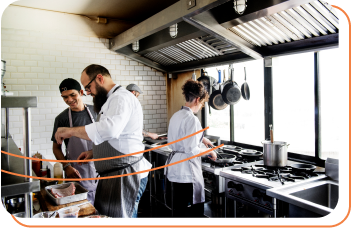
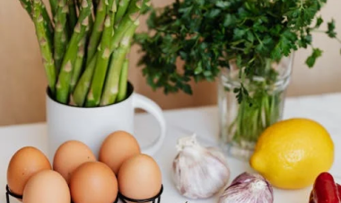
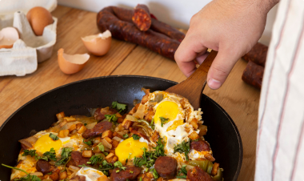
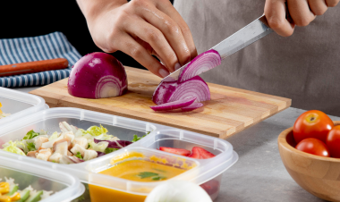
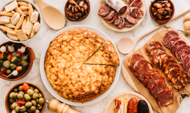
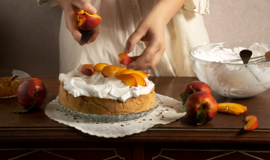

Na cozinha, cada prato é uma obra de arte, e cada sabor, uma experiência única.

Os cursos de gastronomia no Senac Mossoró representam uma excelente oportunidade para quem deseja mergulhar no universo culinário de forma prática e eficiente. Eles são projetados para oferecer um foco para aquilo que estiver propondo, permitindo que os participantes adquiram habilidades básicas e avançadas em um curto período de tempo.
Com duração variável, esses programas oferecem flexibilidade para se adequarem à agenda dos interessados, seja para quem busca uma introdução ao mundo da gastronomia ou para quem deseja aprimorar técnicas específicas. Geralmente ministrados por chefs experientes e apaixonados pelo ofício, esses cursos proporcionam uma combinação única de teoria e prática, permitindo que os alunos experimentem e aprendam diretamente na cozinha.
Além de ensinar técnicas de preparo, manipulação de ingredientes e apresentação de pratos, os cursos livres de gastronomia também abordam aspectos importantes como higiene, segurança alimentar e gestão na cozinha. Dessa forma, os participantes não apenas desenvolvem suas habilidades culinárias, mas também adquirem conhecimentos essenciais para atuar de forma responsável e profissional no ambiente gastronômico.
Por que escolher Gatronomia no Senac?

Nossa abordagem única combina tradição culinária com inovação contemporânea, preparando você para dominar os sabores do mundo.
Aprenda com chefs renomados, explore técnicas avançadas e transforme sua paixão em uma carreira de sucesso na culinária. Escolha Senac e comece a criar seu futuro saboroso hoje mesmo.
Cursos
Técnicas Básicas para Cozinheiro - 40h
O curso de Técnicas Proporcionar aos participantes conhecimentos e o desenvolvimento de Técnicas básicas para cozinheiro, alinhado as normas de higiene e manipulação de alimentos.
Início: 22/07/2024
2° a 6° das 13h30 ás 17h30
Local: Senac Mossoró

Lucre Com O Sabor: Bolos, Doces E Salgados - 40h
O curso "Lucre com o Sabor" surge em resposta à crescente demanda por profissionais qualificados na área de confeitaria e produção de salgados, impulsionada pela busca incessante dos consumidores por produtos diferenciados e de alta qualidade.
Início: 16/09/2024
2° a 6° das 13h30 ás 17h30
Local: Senac Mossoró
Cozinha Regional - 20h
O curso de cozinha regional se concentra em ensinar técnicas culinárias específicas de uma determinada região, destacando ingredientes tradicionais e pratos típicos da cultura local.
Início: 12/08/2024
2° a 6° das 13h30 ás 17h30
Local: Senac Mossoró

Culinária para iniciantes - 20h
O curso de culinária para iniciantes oferece uma introdução prática e teórica aos fundamentos da culinária. Os participantes aprendem técnicas básicas de preparo de alimentos, higiene na cozinha, manuseio de utensílios e equipamentos, além de noções sobre combinação de sabores e apresentação dos pratos.
Início: 12/08/2024
2° a 6° das 13h30 ás 17h30
Local: Senac Mossoró

Preparação de Pães e Pizzas - 40h
Este curso tem como objetivo Proporcionar aos participantes conhecimentos e o desenvolvimento de habilidades no preparo de Técnicas de preparo de pães e pizzas, alinhado às normas de higiene e manipulação de alimentos.
Início: 22/07/2024
2° a 6° das 07:30 ás 11:30
Local: Senac Mossoró

Lucre Com O Sabor: Bolos, Doces E Salgados - 20h
O curso "Lucre com o Sabor" surge em resposta à crescente demanda por profissionais qualificados na área de confeitaria e produção de salgados, impulsionada pela busca incessante dos consumidores por produtos diferenciados e de alta qualidade.
Início: 21/10/2024
2° a 6° das 13h30 ás 17h30
Local: Senac Mossoró

Prepare e Venda Docinhos Classicos para Festas
Durante o curso, os participantes terão a chance de dominar técnicas de preparo, decoração e apresentação de doces como brigadeiros, beijinhos, cajuzinhos, e outros quitutes que são sucesso em festas.
Início: 21/10/2024
2° a 6° das 13h30 ás 17h30
Local: Senac Mossoró
Cozinha Zero: açúcar, glúten e lactose
Este curso tem como objetivo possibilitar ao aluno o desenvolvimento de conhecimentos, valores e habilidades para preparar pratos que sejam isentos de açúcar, glúten e lactose.
Início: 05/08/2024
2° a 6° das 18:00 ás 22:00
Local: Senac Mossoró